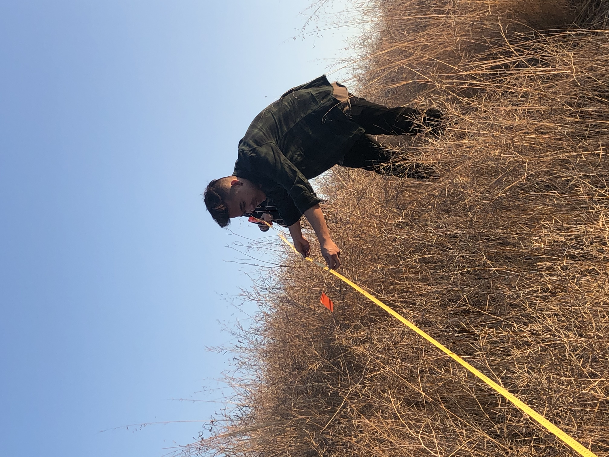

Vi Dao
I never really considered myself smart. Actually, that’s a lie; I always knew I had some aptitude for the sciences, especially over other subjects such as English and History, but I never had exceptionally good grades in high school, particularly compared to my peers. Because of my poor grades, I took this as an indicator that I wasn’t meant to succeed in an academic setting, but I was determined to keep trying in a new setting, not far from my old high school. Coming to the University of California- Riverside was my way of starting anew, I thought the transition academically would be difficult, and it would take me a quarter or two to adjust to the new environment. However, that didn’t end up being the case. I clearly remember the day of my first chemistry midterm as a college student; I walked in extremely nervous and I walked out more confident than I had ever felt from a single exam before. The same night, I discovered that I had only missed one on the exam. That was the day everything had changed, in terms of the way I viewed myself academically. As I reevaluated what I had done to prepare for the exam, I quickly came to realize that the problem in high school was- I did not try at all; I had just resigned myself to being mediocre academically. Admittedly, I did not study too hard for that chemistry test, but the fact that I did so well despite not preparing for it fully made me excited to discover what I could do if I did put in my absolute best effort. And so I continued to keep trying, and I find myself mostly satisfied with my academic achievements, so far at least.
It wasn’t until I found success in my courses here did I consider becoming a doctor. If I am being completely honest, I only chose Biochemistry as a major because I had some interest in chemistry and Biochem simply sounded cooler admittedly. I knew beforehand that medical school was extremely competitive and truly only the best of the best students were admitted to any school. Now that my grades are up to par, I am considering a career in the medical sciences. However, I realize that there is more to being a doctor than just calculating entropy or knowing the difference between an Ecdysozoan and a Lophotrochozoan. An HPAC ambassador that also served as my SI instructor introduced us to the four pillars of medicine: clinical experience, research in labs, leadership experience, and patient-care knowledge, and it was then I realized what I had to do in order to discover if the medical field is truly the career for me.
I aim to be more comfortable interacting with patients.
Additionally, I also hope to gain more research experience.
Experience
Lifeguard
• Ensured safety of patrons using the pool
• Ensured cleaniness of pool ares
• Assited with emergency situations within the complex
Pharmacy Assistant
• Clerical Work
• Stocked shelves
• Ran errands
• Helped answer phone
Education
UC Riverside
Portfolio
